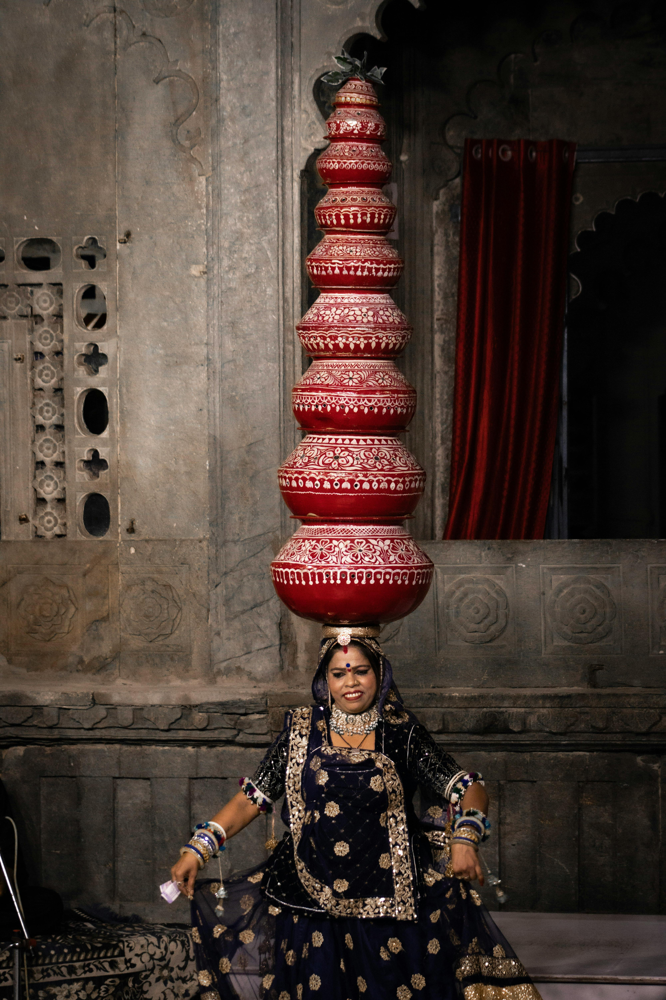
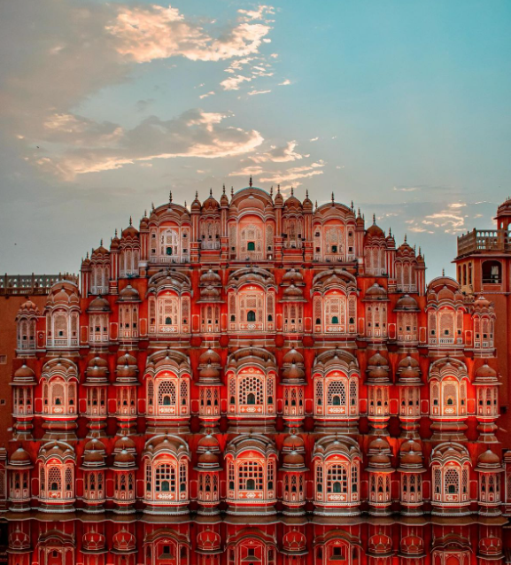
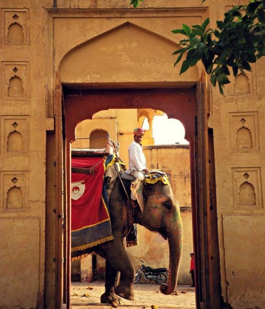
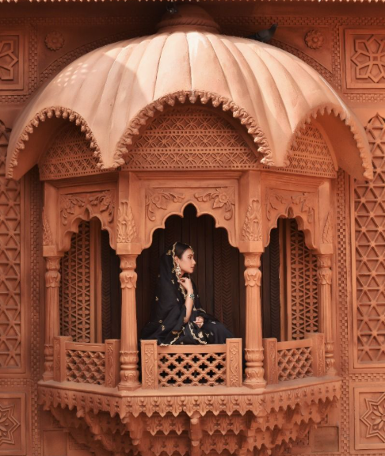

Tourist Locations
Rajasthan is famous for Jaipur, Udaipur, Jodhpur, Jaisalmer, Mount Abu, Chittorgarh Fort, Amer Fort, Hawa Mahal, City Palace, and Ranthambore National Park. These places showcase the state's royal heritage and desert beauty.


Land of Colors, Culture & Courage
Rajasthan is known for its royal heritage, vibrant traditions, colorful attire, folk dances, majestic forts, and warm hospitality. Every festival, costume, and song reflects the proud history of this desert land.
Capital: Jaipur
Largest state in India by area
Known as the "Land of Kings"
Famous for forts, palaces, folk dances, and camel festivals
Major Language: Hindi and Rajasthani dialects




Rajasthan is famous for Jaipur, Udaipur, Jodhpur, Jaisalmer, Mount Abu, Chittorgarh Fort, Amer Fort, Hawa Mahal, City Palace, and Ranthambore National Park. These places showcase the state's royal heritage and desert beauty.
From the graceful Ghoomar dance to soulful folk music, Rajasthan’s culture is deeply rooted in tradition. Festivals like Teej, Gangaur, and Pushkar Fair add life and color to the land.